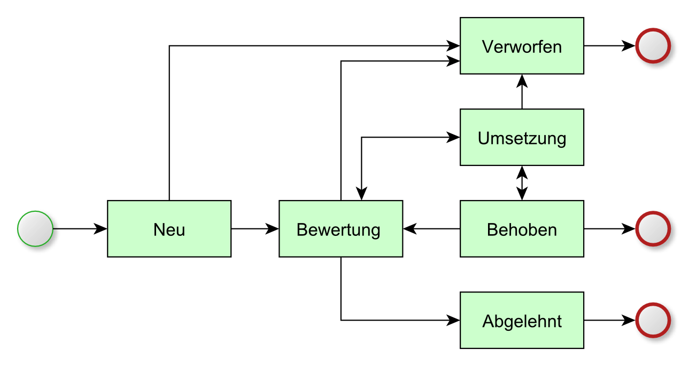

Statusnetz¶
Ein Fehlereintrag kann verschiedene Status annehmen. Der Status eines Fehlereintrags gibt Auskunft darüber, in welchem Bearbeitungszustand sich der Fehlereintrag aktuell befindet. Zudem ist für jeden Status vorgegeben, welcher Folgestatus gewählt werden kann.
Statusdefinition¶
- Neu
- Der Fehlereintrag ist neu angelegt und seine Daten werden erfasst.
- Bewertung
- Der Fehlereintrag wird dahingehend analysiert, ob er weiter bearbeitet, abgelehnt oder verworfen wird.
- Umsetzung
- Mit diesem Status wird der Fehlereintrag so lange abgearbeitet, bis eine Lösung dafür ermittelt und erfolgreich umgesetzt ist.
- Verworfen
- Der Fehlereintrag erhält den Status Verworfen, wenn der Eintrag aus Versehen erfolgte (Systemzusammenhänge wurden vom Erfasser nicht vollständig verstanden).
- Abgelehnt
- Der Fehlereintrag erhält den Status Abgelehnt, wenn sich die Umsetzung der Lösung z.B. als unwirtschaftlich oder unverhältnismäßig herausstellt.
- Behoben
- Der Fehlereintrag erhält den Status Behoben, wenn seine Lösung erfolgreich umgesetzt wurde.
Statusübergänge¶
Die nachfolgende Grafik zeigt alle im System definierten Status sowie die jeweils vom System vorgegebenen Statusübergänge.

Statusnetz eines Fehlereintrags
Regeln und Automatismen für übergeordnete Fehler¶
- Ein übergeordneter Fehlereintrag kann erst dann in den Status Bewertung übergehen, wenn zuvor alle seine Detailfehler den Status Bewertung angenommen haben.
- Ein übergeordneter Fehlereintrag kann erst dann in den Status Behoben übergehen, wenn zuvor alle seine Detailfehler den Status Behoben oder Verworfen angenommen haben.
- Wird bei einem übergeordneten Fehlereintrag der Status auf Verworfen gesetzt, erhalten alle seine Detailfehler automatisch den Status Verworfen.
- Wird bei einem übergeordneten Fehlereintrag der Status auf Abgelehnt gesetzt, erhalten alle seine Detailfehler automatisch den Status Abgelehnt.
Regeln und Automatismen für Detailfehler¶
- Der Eintrag eines Detailfehlers kann erst dann den Status Umsetzung annehmen, wenn sein übergeordneter Fehlereintrag den Status Umsetzung hat.
- Der Eintrag eines Detailfehlers kann den Status Bewertung oder Umsetzung nicht annehmen, wenn sein übergeordneter Fehlereintrag den Status Behoben hat.